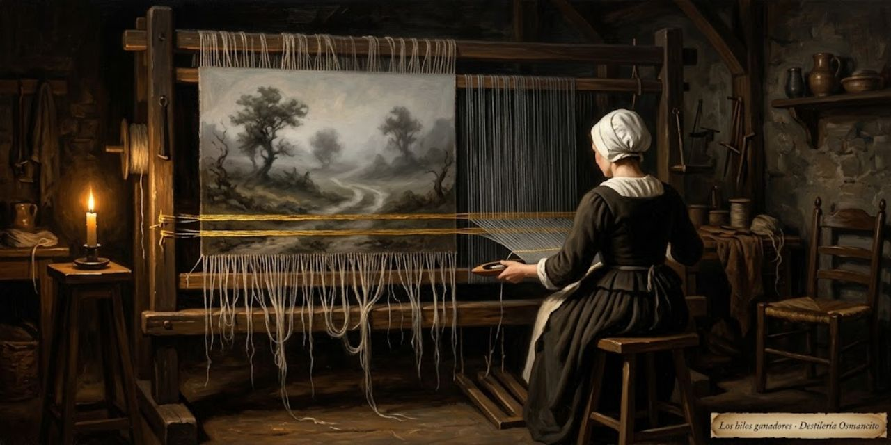

23 de octubre de 2026
Alambique - Frases Selectas

Alambique - Frases Selectas es el procedimiento que puntúa las frases de una sección de la obra y teje las más pesadas en su lectura. Se toman las frases que más pesan, hasta cubrir el diez por ciento de las palabras de la sección, y se tejen con puentes y glosas hasta que la sección se lee completa, de principio a fin. Este cuaderno deja escrito el procedimiento entero, de la puntuación al tejido, para repetirlo igual en otra sección o en otra obra. Se fijó el 20 de octubre de 2026 con el preámbulo de On Writing, de Stephen King: 19 frases, de la BD0071 a la BD0089. La entrada que reúne los tramos abre con una presentación de la obra (ver la decisión 6 de formato).
Para quién se escribe
Todo lo que se publica con este procedimiento se escribe para el lector cero: el que llega en frío y no sabe nada de la obra, de su autor ni de nuestra nomenclatura. Ese lector necesita que se defina y se explique cada cosa antes de hablar de ella: quién es cada persona, qué es cada lugar, objeto o palabra extranjera, y de qué momento de la obra se trata. Ningún nombre queda suelto ni ningún término sin explicar; si hay que saber algo para entender una línea, la línea lo dice antes. Rige para la presentación, los puentes, las glosas y los rótulos.
Puntuar
- Tomar la sección en frases. Se usa el molde de la obra: cada segmento del cuerpo es una frase, con su número. Cada frase vale un punto, ni más ni menos. La sección vale tantos puntos como frases tiene.
- Hallar los puestos de cada frase. Un puesto es un sujeto o un objeto de cualquier cláusula de la frase, principal o subordinada. Cuentan también las cláusulas sin verbo conjugado que tienen su propio sujeto, como «raised by a single parent» o «in finding him». En una pasiva, el agente cuenta como objeto. Cada miembro de un compuesto es un puesto: «my brother and me» son dos. Lo negado cuenta igual que lo afirmado.
- Dejar fuera lo que no es puesto. Los expletivos («there»), las referencias vacías («that», «of this») y los complementos con preposición («between the lines»). Los verbos no se puntúan: no hay ranking de verbos.
- Unificar los alias según su referente. «I», «me», «my» y Stephen King son un nodo; «la madre», «she» cuando se refiere a ella y Nellie Ruth son otro. Lo que importa es la persona o la cosa, no la palabra. Es regla fija del método.
- Repartir el punto. El punto de la frase se divide en partes iguales entre todos sus puestos. Si un nodo ocupa varios puestos en la misma frase, cobra cada vez. Ejemplo, la BD0076, «If so, she never succeeded in finding him»: tres puestos, «she», el sujeto implícito de «finding» (también ella) y «him». La madre cobra dos tercios del punto y el padre un tercio.
- Sumar por nodo. El peso de un nodo es lo que suma en todas las frases de la sección. Ordenados, los nodos dan el paisaje de la sección.
- Puntuar las frases. Una frase pesa lo que suman los pesos de sus nodos. Ordenadas de mayor a menor, forman el ranking de frases.
Seleccionar
- Tomar las frases de más peso hasta cubrir el diez por ciento de las palabras de la sección. Se suman las palabras de las elegidas, de mayor a menor peso, hasta alcanzar ese diez por ciento o pasarlo por primera vez. La última frase entra siempre entera: si con ella la suma se pasa, el exceso se admite. Lo que no se admite es quedar por debajo ni cortar una frase. Las traducciones no cuentan.
- Ponerlas en el orden de la obra, no en el orden del ranking.
Tejer
- Desde el comienzo de la sección hasta la primera ganadora, un puente. La primera frase de la sección entra en este puente.
- La primera ganadora. La cita va en su idioma original, en bloque, con su número de frase («Frase 75»), y debajo su traducción al castellano en párrafo normal. Se verifica palabra por palabra con el libro abierto, nunca de memoria.
- Un puente y una glosa hasta la segunda ganadora. El puente cuenta lo que pasa entre las dos frases, para que no queden huecos. La glosa, en párrafo propio, enseña algo que el lector necesita.
- La segunda ganadora, con su traducción debajo.
- Un puente y una glosa hasta el final de la sección. La última frase de la sección entra en este puente.
Lo que explican el puente y la glosa
Además de cubrir los huecos y enseñar, el puente y la glosa explican lo que un lector sin contexto no sabe. Lo primero, quién es cada persona. Mary Karr, la madre, el hermano, el padre: ninguno puede quedar como un nombre suelto.
Para cada persona se anota si el original la presenta. Si el original la aclara, se dice con sus palabras. Si no la aclara, la explicación viene de fuera, y se marca como venida de fuera, con su fuente, para que se vea qué dice el libro y qué dice quien lo explica. Lo que no se pudo verificar se dice.
El puente conecta las citas y aporta el contexto necesario para seguir la lectura. Se revisa con la fuente abierta para detectar paráfrasis que sustituyan la voz literal del libro, tanto de frases seleccionadas como de pasajes no seleccionados. La holgura del presupuesto no se utiliza para introducir una selección paralela mediante paráfrasis. Si un pasaje merece entrar como cita, se evalúa mediante el ranking y el presupuesto de selección. Reclasificar una paráfrasis como glosa no resuelve el problema: la glosa aporta una explicación educativa, no una vía adicional para reproducir el contenido del libro.
Decisiones de formato
Estas son las decisiones de formato de este procedimiento:
- La cita va en su idioma original y debajo su traducción al castellano. Así aprendemos a traducir también.
- La glosa va tejida en cada tramo, no en una sección aparte. La glosa tejida es una lectura acompañada, y así es como más se disfruta.
- El dibujo va justo debajo del título de la unidad, antes del primer puente, en proporción 5:8.
- Los presupuestos se miden contra las palabras de la unidad fuente. La proporción ideal es un diez por ciento de citas y un diez por ciento de puentes, y el presupuesto da holgura a los puentes hasta un quince por ciento como techo, no como objetivo. La glosa es opcional y educativa, de presupuesto libre, con un máximo del quince por ciento, como los puentes, solo cuando presentar a cada persona o enseñar lo que haga falta lo pida. Son techos, no cantidades que haya que gastar. Las traducciones quedan fuera de los presupuestos.
- La cita lleva su número en castellano llano: «Frase 17», no el código del molde (BD0017). El lector que llega en frío no conoce nuestra nomenclatura. Se escribe sin ceros a la izquierda, bajo la cita en original. El código se queda en los registros internos y en este cuaderno.
- La entrada abre con una presentación de la obra y un puente al primer tramo. Entre el comienzo de la entrada (título y dibujo) y el primer tramo va una glosa corta que presenta la obra: quién la escribió, cuándo, para qué y cómo está armada. Se escribe con el libro abierto, como todo lo demás, y se dice qué viene de fuera del libro. Cierra con un puente que lleva al lector, que llega sin saber nada, hasta el primer tramo. Se escribe una sola vez, al abrir la entrada; los tramos siguientes no la repiten.
La presentación también da la descripción de la página, la que se ve al compartir el enlace en redes y en la vista previa. Una vez escrita la presentación, se resume en una sola frase de hasta 100 caracteres, espacios incluidos, que diga qué es la obra y quién la escribió. Va en castellano llano, sin nombres internos del procedimiento. La frase se escribe una vez y se copia igual en las dos etiquetas del HTML:
<meta name="description">y<meta property="og:description">. Antes de publicar se cuentan los caracteres, y si pasan de 100 se acorta. Los tramos siguientes no la cambian. - La cita va en un bloque de cita con su rótulo dentro, sin líneas sueltas. En la página, la cita en original y su rótulo «Frase N» —en letra pequeña— van juntos dentro del mismo bloque de cita: primero la cita, en su párrafo, y justo después el rótulo. En el cuaderno de texto, la cita va en líneas de cita y el rótulo en su propia línea de cita, debajo. Ninguna cita se publica sin rótulo, ningún rótulo va en un párrafo aparte y el rótulo no puede salir jamás como la palabra «None»: si el rótulo no queda en su sitio, la cita no se publica.
- Las partes se separan con un filete. Un filete va solo en su línea (---) antes de cada sección y antes de cada unidad, menos antes de lo que abre la página y antes de la primera unidad de una sección. En la página, el filete sale como una línea fina con espacio encima del título, y con más espacio cuando el título es de sección, para que el corte mayor se note.
- Las piezas llevan su clase y la apariencia vive en la hoja de estilos base. Cada pieza lleva su clase: la cita,
cita, dentro de su bloque de cita; el puente,puente; la glosa,glosa; la traducción,traduccion. Este cuaderno solo nombra las clases y su función; los colores y las letras se definen en elbase.cssdel sitio, nunca en la página ni aquí, y ninguna página lleva estilos propios que lo contradigan.
Revisión antes de entregar
Antes de entregar una unidad se revisa entera, con la página montada:
- Marcado. Cada cita va en su bloque de cita, con su rótulo dentro. Ninguna cita queda como líneas sueltas ni con signos de cita pegados a la prosa.
- Estilo. Cada pieza lleva su clase: el puente la suya, la glosa en párrafo propio, la traducción pegada a su cita. Todas las unidades de la entrada reparten las clases de la misma manera.
- Tejido. Entre ganadora y ganadora hay puente y, cuando hay algo que enseñar, glosa. Con la fuente abierta se contrasta cada puente, para detectar paráfrasis que sustituyan la voz literal del libro; reclasificar una paráfrasis como glosa no resuelve el problema. Si dos ganadoras salen seguidas, se anota el motivo en la entrega —por ejemplo, que en el original ya venían pegadas— en vez de rellenar por rellenar.
- Medida. Se cuentan las palabras de las citas, de los puentes y de la glosa. La entrega dice la cifra de cada pieza, qué parte de la unidad fuente cubren las citas y cómo queda la prosa contra su presupuesto; lo que se pase se declara con su número.
- Vista. La unidad se ve en el navegador antes de publicarse.
La entrega dice qué encontró la revisión y qué se corrigió.
Cómo se comprueba el ranking
Al publicar se dice qué puestos contaron, cuáles quedaron fuera y cómo se unificaron los alias. Así cualquiera puede repetir la cuenta con las mismas reglas y comprobar que salen las mismas frases.
Cambios
23 de octubre de 2026: la selección se mide en palabras de la sección, con piso del diez por ciento y la última frase entera (antes, en cantidad de frases); los presupuestos se fijan contra las palabras de la unidad fuente: ideal del diez por ciento para citas y puentes, techo del quince por ciento para puentes y máximo del quince por ciento para la glosa opcional (antes, puentes y glosas contra las palabras de las citas ganadoras «con un poquito por arriba»); las piezas llevan su clase y la apariencia pasa a la hoja de estilos base; se añaden la nota de que el puente no sustituye la voz del libro y la sección «Revisión antes de entregar».
© 2026 Osmancito